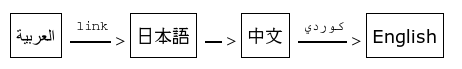
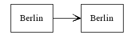
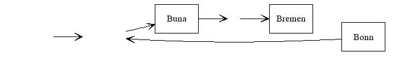
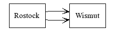
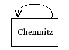
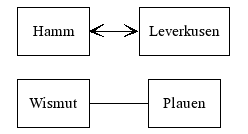
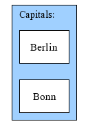
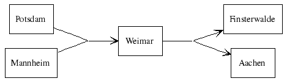
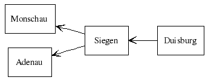

Graph::Easy support a wide array of features, below you will find a brief overview of some of them:
Unicode
Graph::Easy has full Unicode support, both in input and output:
[ العربية ] -- link --> [ 日本語 ] --> [ 中文 ] -- كوردي --> [ English ]
The above example contains Japanese, Chinese, Kurdi and a few other characters. Here is the output of Graph::Easy as HTML (no, this is not an image, use the text zoom to see it change size :-):
| ﺎﻠﻋﺮﺒﻳﺓ | link | > | 日本語 | > | 中文 | ﻙﻭﺭﺪﻳ | > | English | |||||||||||||||||||
If you do see little rectangles or diamonds with a question mark inside, you need to install the missing fonts on your system, or use a browser that fully supports Unicode (Opera, Konqueror and Firefox do :-)
Here is a screenshot of the graph from above, showing what it looks like
on an Unicode-aware browser:

Nodes with the same text
Since each node is unique, there cannot be two nodes with the same name. Since it is sometimes desired to have two nodes with the same text appearing in the layout, you can override the text displayed with a label:
[ Bonn ] { label: Berlin; } -> [ Berlin ]
This will be rendered like this:
+--------+ +--------+ | Berlin | --> | Berlin | +--------+ +--------+
Anonymous and Invisible Nodes and Edges
Graph::Easy supports anonymous nodes,
normal invisible nodes (with a minimum size) and truly invisible
nodes (their size is as small as possible), as well as
invisible edges:
[ ] { title: Anonymous Node; }
-> [ $sys$Node ] { shape: invisible; title: You don't see me! }
-> [ Buna ]
-> [ Borna ] { shape: point; point-style: invisible; }
-> [ Bremen ]
-> { style: invisible; } [ Bonn ]
-> [ $sys$Node ]

+------------------------------------------+
v |
+------+ +--------+ +------+
--> --> | Buna | --> --> | Bremen | | Bonn |
+------+ +--------+ +------+
Please see the chapter about the syntax for details on anonymous and invisible nodes and edges.
Multi-Edges
Most graphing packages also allow multi-edges. A multi-edge graph simply allows two edges going from the same starting node to the same target node:
[ Rostock ] -> [ Wismut ] [ Rostock ] -> [ Wismut ]
+---------------+ | v +---------+ +--------+ | Rostock | --> | Wismut | +---------+ +--------+
Self-Loops
In addition to that, self-loops are usefull for state-machines and flowcharts. A self-loop is one edge going from one node back to the same node again:
[ Chemnitz ] -> [ Chemnitz ]
+------+ v | +----------+ | Chemnitz | +----------+
Edge-parts as endpoint of another edges
Sometimes you want to point an edge towards the label of another edge.
Since tradionally edges can only connect nodes with other nodes,
Graph::Easy features nodes with a shape of edge, these
nodes will fit seamless into an edge and thus create the illusion that
you point the edge at the label of another edge:
[ car ] { shape: edge; }
[ Bonn ] -- train --> [ Berlin ] -- [ car ] --> [ Ulm ]
[ rented ] --> [ car ]
+------+ train +--------+ car +-----+
| Bonn | -------> | Berlin | -----------------> | Ulm |
+------+ +--------+ +-----+
^
|
|
+--------+
| rented |
+--------+
Undirected and bidirectional edges
Another often used feature are undirected or bidirectional edges:
[ Hamm ] <--> [ Leverkusen ] [ Wismut ] -- [ Plauen ]
+--------+ +------------+ | Hamm | <--> | Leverkusen | +--------+ +------------+ +--------+ +------------+ | Wismut | ---- | Plauen | +--------+ +------------+
Groups (Clusters or Subgraphs)
Also, subgraphs (called "groups" in Graph::Easy) allow you to cluster nodes together:
( Capitals: [ Bonn ], [ Berlin ] )
+ - - - - - - + ' Capitals: ' ' ' ' +---------+ ' ' | Berlin | ' ' +---------+ ' ' +---------+ ' ' | Bonn | ' ' +---------+ ' ' ' + - - - - - - +
It is also possible to nest groups (not yet implemented), and to have edges
going from a group to a node, vice versa, or even from a group to another
group.
See the appropriate chapter about Hinting
for more details and examples.
Joints (Edges Splicing and Splitting)
You can also have edges that split or join up:
[ Potsdam ], [ Mannheim ]
--> { end: back,0; }
[ Weimar ]
--> { start: front,0; } [ Finsterwalde ], [ Aachen ]

+----------+ +--------+ +--------------+
| Mannheim | ------+-> | Weimar | -+-----> | Finsterwalde |
+----------+ | +--------+ | +--------------+
| |
| |
| |
+----------+ | | +--------------+
| Potsdam | ------+ +-----> | Aachen |
+----------+ +--------------+
Please see the section about joints for further reference.
Flow directions
Graph::Easy allows you to adjust the flow of the entire graph, as well as
on any node, or even on a per edge-basis. Flow can be specified
either absolut (giving absolut directions like south or west),
or relative (directions left, front etc that
are relative to the local flow at that node).
graph { flow: west; }
[ Duisburg ] -> [ Siegen ] { flow: left; }
-> [ Adenau ]
[ Siegen ] -> { flow: up; } [ Monschau ]

+----------+ | Monschau | +----------+ ^ | | +----------+ +----------+ | Siegen | <-- | Duisburg | +----------+ +----------+ | | v +----------+ | Adenau | +----------+
For a complete overview of the possibilities of flow control, please the see the appropriate chapter about Hinting.
Colors and Styles
Graph::Easy supports colors for all objects, many different shapes,
plus a wide array of styles for edges, arrows and borders:
| Berlin
(Spree) |
train | > | Frankfurt
(Oder) |
▶ | München
(Isaar) |
||||||||||||||
Please see the chapter about attributes for possible values and many examples.